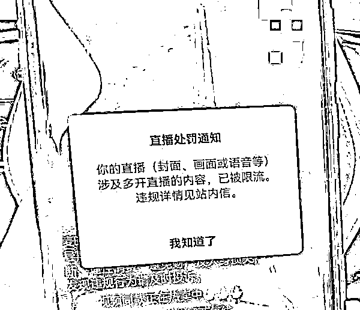

来源：https://bewpsojbob.feishu.cn/docx/JKbDdEXqvo0etGxPO0ocyPlonlJ
圈友们好，我是诺妈，一个在互联网创业12年的二胎宝妈，做过国外代购，有淘宝皇冠店铺。做过母婴微商，做过优惠券，做过品牌特卖，都做到了万人团队。也做过gpt，做过抖音，做过视频号，在各个项目摸爬滚打靠自己积累了8位数财富。
今年的视频号对普通人来说机会太好了，没有抖音那么卷，没有小红书那么追求颜值。身边太多普通人在视频号成功的案例，我自己也实战视频号直播取得了些成绩，以下是我自己直播的截图，左下角的数字就是单场直播的成交单数。
看到身边很多玩视频号直播的伙伴直播规则没弄清楚，直播过程中出现了各种违规出现单场限流甚至是处罚账号，很可惜！所以想分享一些自己的实战经验给大家避避坑，视频号确实规矩还挺多，一不小心就是违规限流。视频号直播方面的规则在视频号的“创作者中心”-“帮助与反馈”-“规则中心”中，里面有个“直播专项”，重点看里面的《微信视频号直播行为规范》。
视频号比抖音要严，规则很多，看完行为规范也容易云里雾里的，想着自己这段时间的直播，也积累了很多实战经验，所以整理分享出来帮助大家避避坑。以下都是我自己和身边伙伴真实遇到过的违规经验总结，属于比较容易踩坑的违规情况，给大家作为参考，并没有说涵盖到所有的违规情况，更全的规则内容还请大家看视频号官方文档。以下如果有哪里不对的也欢迎大家多交流指正！
多开违规:

各个直播平台都是限制多开的，也就是同一时刻同个人只能播一个直播间，一个人播2个或2个以上的直播间就是违规的。如果有多账号需要同时开播，需要安排不同人来播。视频号在多开这方面管的很严，我们当时是一个伙伴自己在播一个号，她老公在播另一个号，然后她老公拿着直播手机走过，摄像头不小心扫到了老婆的脸，就被多开处罚了。如果有两夫妻同时在播，或者工作室不同人在播的情况，也要注意直播手机别扫到对方。
违规用语:
比如出现最高级、唯一、限时、治疗、免费试用等用语都是违规，现在连七天无理由和运费险的字眼都容易违规。具体的直播违规词给大家整理了一份文档，点下方蓝字查看。
诱导互动进行虚假福利承诺:
比如说点关注送赠品，公屏评论送试用，抽奖福袋不兑现等等都属于违规诱导。
涉及露沟或者凸显胸部特征:
直播时候女性不要穿低胸或者大领口的衣服，有时候动一下不小心就会触发这个违规。也不要出现脱衣服的动作，哪怕不是低胸衣服，脱衣服的动作也容易触发这个违规。
画面杂乱无章:
贴图大家慎用，我在一开始也都画面右上角用贴图写上产品优势，上图是我一场直播爆单了9000多的时候，因为头往前一凑，贴图遮了一点额头，就违规限流了，很可惜！贴图很容易触发画面杂乱无章的违规。
电流声、噪音:
散热器有些会有电流声，会触发这个违规。还有时候风扇在旁边吹或者旁边噪音过大也会触发这个违规，选散热器要注意，然后身边环境吵，可以用降噪的领夹麦克风。
封面违规:
封面不要有文字，也不要是明星等人物，也不要与直播主题完全无关，不然就会出现这个违规。建议用不带文字的产品图。
发布虚假信息:
主播在直播时谈及功效，有夸大描述，承诺性话术都会触发这个违规。
儿童出镜:
未满18周岁儿童是不能出现在直播画面里的，一出现就违规，严重的可能会封直播功能。家里有孩子的，不要让孩子出现在直博镜头前。
低质直播:
人没出现在镜头前，比如去上个厕所没有点暂停直播按钮，一般几分钟就会被系统检测到。有事可以拿着手机，脸对着摄像头走路，如果实在没办法带着手机做事情，就点右上角的直播暂停按钮再离开，如果直播未满2小时，暂停几分钟可以，不能暂停太久。
主播长时间不说话:
如果0人在线的直播间，最好不要超过一分钟不说话，哪怕是隔一分钟说一句欢迎语都可以。如果是多人在线的直播间，不要超过20秒不说话，尤其是爆单直播间，超过20秒不说话，被人投诉就会处罚。
手机外放声音:
手机外放的声音被系统检测到、低头看手机不说话、用其他设备播放录音等等都是违规的，如果直播时无聊要玩手机，建议放在直播手机的侧面玩，然后带上耳机不外放声音。
绿幕背景有视频:
视频号对绿幕视频管理很严，不要用，很容易被判低质量直播。要做绿幕直播建议去抖音。
非露脸直播:
像这类手播也容易被判违规，建议做露脸直播更安全，需要露脸开播也是写在视频号直播规则里的。
直播时吸烟:
直播时千万不要吸烟，也是违规的！
另外，给大家提个醒！直播时右上角如果一直出现或者频繁出现网络信号差的提醒，一定要处理，不然就会限流。
处理方法: 先飞行模式10秒后重新打开看看还会不会有，还会有就飞行模式20秒再打开，再不行就飞行模式30秒再打开。如果三次飞行模式后还会出现，就手机重启，重连直播间。出现这个提示不能切换网络，切换网络也会断流。
暂时整理到这，以后有什么其他常见违规也会持续更新的，希望大家多多在视频号收获，也欢迎对视频号感兴趣的圈友们互相学习交流，一起进步！